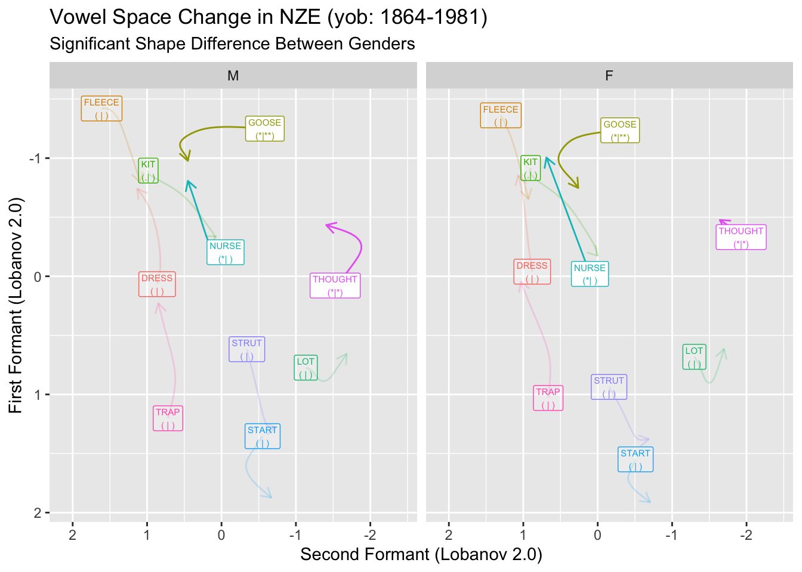

# Required tidyverse packages
# (I occasionally try to do without 'library(tidyverse)')
library(dplyr)
library(tidyr)
library(stringr)
library(purrr)
library(glue)
library(ggplot2)
library(gganimate)
# gtools library for generating pval stars.
library(gtools)
# mgcv for gamms, itsadug for gamm visualisation
library(mgcv)
library(itsadug)
# nzilbb.vowels for data and some helper functions
# To install, use remotes::install_github('JoshuaWilsonBlack/nzilbb_vowels')
library(nzilbb.vowels)Model Check and Significance Testing for Vowel Space GAMMs
GAMMs
vowels
sociolinguistics
Checking GAMM models, significance tests, and visualisation for by-vowel models.
Introduction
In a previous post, I set out a workflow for fitting and visualising generalised additive mixed models for F1 and F2 of a series of vowels and using these to visualise change over an entire vowel space.
In that post, I waved off the issue of evaluating individual models. In this post I’d like to fill out two aspects of this and link them to the workflow I presented in the previous post. The first is the use of the gam.check function to work out if your smooths enable sufficient ‘wiggliness’ for your data and whether the assumption of normally distributed residuals holds. The second is to show how information about model significance can be extracted both in terms of significance of change in a given vowels trajectory over time and in terms of the difference between the trajectories of, say, men and women (following the recent advice of Márton Sóskuthy.
We’ll very quickly run through fitting models using the nest and mutate approach (using purrr), look at the use of gam.check within this framework, and then turn to significance testing. I’ll conclude by adding an indication of significance to the static and animated vowel space plots presented in the previous post.
Model Fit (Again)
I’ll rush over this part, given that it is covered in the previous post.
Three things are worth noting:
I’m bringing in the data for the models using my own package
nzilbb.vowels. This is very much work in progress and I don’t promise anything about it’s future versions! I will endeavour to keep this post functional.I’ll point out where the structure differs from that used in the previous post.
Unlike the previous post, I’m using raw token data from each speaker rather than just taking their mean values. This makes the data a little noisier and the models a little harder to fit.
Let’s load some libraries:
Our data is built in to nzilbb.vowels under the name onze_vowels. Our modelling requires that we represent our factors as factor vectors rather than character vectors.
onze_data <- as_tibble(onze_vowels) %>%
mutate(
across(.cols = c('speaker', 'vowel', 'word'), .fn = as.factor),
)The next steps will fly by without much comment. We apply Lobanov 2.0 filtering and remove the old F1 and F2 values for convenience.
onze_data <- onze_data %>%
lobanov_2() %>%
select(-(F1_50:F2_50))Joining with `by = join_by(speaker, vowel)`Next, we pivot the data so that the normalised F1 and F2 data appears in a single column, group the tibble and nest so that we have a row for each model we want to fit.
onze_models <- onze_data %>%
pivot_longer(
cols = F1_lob2:F2_lob2,
names_to = "formant_type",
values_to = "formant_value"
) %>%
group_by(vowel, formant_type) %>%
nest()Now it’s time to fit some models.
onze_models <- onze_models %>%
mutate(
model = map(
data,
~ bam(
formant_value ~ gender + s(yob, by = gender) # main effects
+ s(speech_rate) + # control variable
s(speaker, bs = 're') + s(word, bs = "re"), # random effects
data = .x,
discrete = T,
nthreads = 16 # I'm on a silly computer right now.
# Perhaps reduce nthreads to 4.
)
)
)Using gam.check
The function gam.check from mgcv tells us a lot about a GAMM. Here it is for the first GAMM in our tibble. This can be done by taking the first object from the model column.
gam.check(onze_models$model[[1]])
Method: fREML Optimizer: perf chol
$grad
[1] -2.459495e-05 -2.930034e-08 -4.469310e-05 1.003085e-05 -7.541875e-07
[6] 1.565537e-05
$hess
[,1] [,2] [,3] [,4] [,5]
2.459335e-05 -5.261901e-09 -2.823390e-11 -1.002578e-05 7.548775e-07
-5.261901e-09 9.229684e-02 -4.556448e-07 1.542197e-01 -6.173866e-03
-2.823390e-11 -4.556448e-07 4.469058e-05 -6.994732e-06 -1.076207e-06
-1.002578e-05 1.542197e-01 -6.994732e-06 3.353799e+01 -2.782142e-02
7.548775e-07 -6.173866e-03 -1.076207e-06 -2.782142e-02 1.462190e+01
d -1.561899e-05 -3.098834e-01 -8.006339e-06 -3.960741e+01 -3.784472e+01
[,6]
-1.561899e-05
-3.098834e-01
-8.006339e-06
-3.960741e+01
-3.784472e+01
d 3.468500e+03
Model rank = 621 / 621
Basis dimension (k) checking results. Low p-value (k-index<1) may
indicate that k is too low, especially if edf is close to k'.
k' edf k-index p-value
s(yob):genderF 9.00 1.00 1.01 0.815
s(yob):genderM 9.00 1.62 1.01 0.835
s(speech_rate) 9.00 1.00 0.96 0.015 *
s(speaker) 100.00 79.21 NA NA
s(word) 492.00 75.69 NA NA
---
Signif. codes: 0 '***' 0.001 '**' 0.01 '*' 0.05 '.' 0.1 ' ' 1We get:
- A qq-plot and a histogram of residuals. Both suggest heavy tails. This seems to be quite common with formant data. One option to deal with this, although it increases computation load, is to use a scaled t distribution as our residual model. This can be done by adding
family = scat(link='identity'))to the arguments of thebamfunction. I won’t explore this option in this post. - Two scatter plots of residuals. The linear predictor is the one to look at. There is no obvious pattern in this case. This is good!
- Console output within which the main thing to check is the ‘Basis dimension (k) checking results’. These indicate the possible degrees of freedom (
k') which each smooth is provided by the model specification and the effective degrees of freedom (edf) of the smooth which has been fit to the data. We want to avoid the combination of low p-values andedfclose tok'. The current output doesn’t have anything to worry about here either. Ifedfgets close tok'we can increase the possible ‘wiggliness’ of the relevant term by adding the argument, say,k = 11(which is one higher than the default value of 10) to the relevant smooth specification. When fitting the same model formula to multiple datasets, we need to pick akvalue which works for all. Practically speaking, the only cost to increasingkis computational.
gam.check does not return a value. So we can’t save it’s results using the mutate and map approach used above. I suggest walking through the data in the following way. This will output the plots and console output for each of the models in turn. The output is not given here to avoid this post becoming very long.
walk2(
str_c(onze_models$vowel, '_', onze_models$formant_type),
onze_models$model,
~ {
print(.x)
gam.check(.y)
}
)One downside of the approach to fitting multiple models I’m suggesting here is that the same structure has to be used for all of them. The use of gam.check here is odd insofar as we are testing a series of particular models, but can only modify the general structure which we have set to apply to each model. It may be that there is a ‘tidymodelling’ approach which enables tweaking of each model. I’d be keen to hear of any such thing.
As always in statistics, you can’t just rely on a one-size-fits-all recipe. Reflection on the nature of your own data should always be involved in your selection of ‘k’.
Significance Testing
We have produced models of normalised first and second formant values for New Zealand English monophthongs over a long span of time. We’ve fit distinct model for each vowel and formant type pair (a model for dress F1, a model for dress F2, &c. &c…). Within each of these models, we fit a distinct smooth for the two gender categories in the data.
P-Values for By-Factor Smooths from the Model Summary
The simplest method, if we are interested in which trajectories through the vowel space represent statistically significant changes is to extract p-values from the model summaries produced by the summary function.
In this case, we say that a trajectory is significant if either the p-value for the F1 smooth or the F2 smooth is less than 0.05. This kind of disjunctive use of p-values leads to false positives. So, for similar reasons to those presented in the Sóskuthy paper linked above, it is wise to apply the Bonferroni correction here. Since two p-value are involved, we simply divide our threshold for significance by 2, to give a new threshold of 0.0025.
Here’s what the output of summary applied to one of our models looks like (I’ve picked one with significant effects on year of birth).
model_index <- 3
paste0("Vowel = ", onze_models$vowel[[model_index]])[1] "Vowel = FLEECE"paste0("Formant type = ", onze_models$formant_type[[model_index]])[1] "Formant type = F1_lob2"summary(onze_models$model[[3]])
Family: gaussian
Link function: identity
Formula:
formant_value ~ gender + s(yob, by = gender) + s(speech_rate) +
s(speaker, bs = "re") + s(word, bs = "re")
Parametric coefficients:
Estimate Std. Error t value Pr(>|t|)
(Intercept) -1.03870 0.02515 -41.306 < 2e-16 ***
genderM -0.15620 0.02947 -5.301 1.17e-07 ***
---
Signif. codes: 0 '***' 0.001 '**' 0.01 '*' 0.05 '.' 0.1 ' ' 1
Approximate significance of smooth terms:
edf Ref.df F p-value
s(yob):genderF 1.533 1.597 65.436 <2e-16 ***
s(yob):genderM 2.684 2.795 39.972 <2e-16 ***
s(speech_rate) 1.000 1.000 1.924 0.165
s(speaker) 74.509 96.000 7.205 <2e-16 ***
s(word) 215.748 734.000 1.968 <2e-16 ***
---
Signif. codes: 0 '***' 0.001 '**' 0.01 '*' 0.05 '.' 0.1 ' ' 1
R-sq.(adj) = 0.221 Deviance explained = 24%
fREML = 10133 Scale est. = 0.30672 n = 11896This is the model for fleece F1. The parametric coefficients show the intercept terms for the women ((Intercept)) and the genderM term for the men. This gives the average (normalised) value for fleece F1 for the women and the difference between this and the average for the men. The difference between these values comes out as significant. But what we’re really interested in is whether they differ across the year of birth variable.
To see this, we look at the smooth terms. As the heading suggests, these are ‘approximate’ significances. For our purposes, this just means there’s ‘mathematical dragons lurking about here. All we ought to know is that, if a p-value is ’quite close’ to our cut off, we should report that. The p-values we are looking at for this model do not have this problem. We’re looking at the values for s(yob):genderF and s(yob):genderM. In both cases, they are less than \(2\times10^{-16}\).
While we’re at it, let’s plot these smooths using the plot_smooth function from itsadug.
plot_smooth(
onze_models$model[[model_index]],
view="yob",
plot_all = "gender",
main = "FLEECE F1 Year of Birth Smooths",
rug = TRUE
)Summary:
* gender : factor; set to the value(s): F, M.
* yob : numeric predictor; with 30 values ranging from 1864.000000 to 1981.000000.
* speech_rate : numeric predictor; set to the value(s): 4.5576.
* speaker : factor; set to the value(s): IA_f_527. (Might be canceled as random effect, check below.)
* word : factor; set to the value(s): word_12921. (Might be canceled as random effect, check below.)
* NOTE : The following random effects columns are canceled: s(speaker),s(word)
There’s no way to tell from the summary output what the nature of the two smooths is. We will turn to the question of whether the two smooths are significantly different from one another in moment. But with the current model, we can see that both a significantly different from 0.
In order for us to access the p-values for s(yob):genderM and s(yob):GenderF for all of our models at once, we need to know a bit more about how the output of summary is stored by R: summary, when applied to a GAMM, produces a named list with information about the GAMM (run ?summary.gam to see the details). We need the first two smooth p-values. These are stored with the name s.pv.
To extract this information for each model, we create a new column which extracts the p-values for the smooths from the summary of each GAMM, and then columns for each of the p-values we are interested in. This can be done as follows:
onze_models <- onze_models %>%
mutate(
model_smooth_pvs = map(
model,
~ summary(.x)$s.pv
),
genderF_smooth_pv = map_dbl(
model_smooth_pvs,
~ .x[[1]]
),
genderM_smooth_pv = map_dbl(
model_smooth_pvs,
~ .x[[2]]
)
) %>%
select(-model_smooth_pvs)Notice the use of map_dbl, which ensures that the resulting column is numerical rather than a list column. If anyone reading this has any idea of how to generate approximate p-values for the smooth terms in these models without running summary, I’d greatly appreciate it! This block takes a very long time to run.
We can look at the trajectories which appear as significant for either the males or females using the following code:
onze_models %>%
select(-model, -data) %>% # Sometimes it's good to exclude the columns with
# large objects.
filter(genderF_smooth_pv < 0.05 | genderM_smooth_pv < 0.05)# A tibble: 20 × 4
# Groups: vowel, formant_type [20]
vowel formant_type genderF_smooth_pv genderM_smooth_pv
<fct> <chr> <dbl> <dbl>
1 THOUGHT F1_lob2 0.237 0.00000107
2 THOUGHT F2_lob2 0.0646 0.00454
3 FLEECE F1_lob2 0 0
4 FLEECE F2_lob2 0.00143 0
5 KIT F1_lob2 0 0
6 KIT F2_lob2 0 0
7 DRESS F1_lob2 0 0
8 DRESS F2_lob2 0.0454 0.000601
9 GOOSE F1_lob2 0 0.00000863
10 GOOSE F2_lob2 0.000124 0
11 TRAP F1_lob2 0 0
12 TRAP F2_lob2 0.000969 0.254
13 START F1_lob2 0.00438 0.000000694
14 START F2_lob2 0.0269 0.0154
15 STRUT F1_lob2 0.0000647 0
16 STRUT F2_lob2 0 0.000000718
17 NURSE F1_lob2 0 0
18 NURSE F2_lob2 0.00000633 0.00000139
19 LOT F1_lob2 0.00136 0.428
20 LOT F2_lob2 0.00000706 0 Each is ‘significant’ by the 0.05 threshold for one gender or the other.
Plotting Significance of By-Factor Smooths in Vowel Space
Here, I again copy the steps in the previous post. The only difference here is that we are going to have information about significance along with our predicted formant values.
We generate model predictions from each model:
to_predict <- list(
"yob" = seq(from=1864, to=1981, by=1), # All years
"gender" = c("M", "F")
)
# BTW: Get prediction will just assume the average value for any predictors not
# mentioned (in this case, Speech_rate).
onze_models <- onze_models %>%
mutate(
prediction = map(
model, # This time we're applying the function to all the models.
# We again introduce the function with '~', and indicate where the model
# goes with '.x'.
~ get_predictions(model = .x, cond = to_predict, print.summary = FALSE)
)
)We then unnest the predictions, making sure to keep our p-value information.
onze_predictions <- onze_models %>%
select(
vowel, formant_type, genderF_smooth_pv, genderM_smooth_pv, prediction
) %>%
unnest(prediction)We still need to pivot our data so that we have distinct columns for the fit and the p-value for each formant type.
onze_predictions <- onze_predictions %>%
mutate(
p_value = if_else(gender == "F", genderF_smooth_pv, genderM_smooth_pv)
) %>%
select( # Remove unneeded variables
-speech_rate,
-CI,
-genderF_smooth_pv,
-genderM_smooth_pv
) %>%
pivot_wider( # Pivot
names_from = formant_type,
values_from = c(fit, p_value)
)Our significance test for each vowel is to test whether either of the p-values for the vowel is less than 0.025. We make a new column to track this.
onze_predictions <- onze_predictions %>%
mutate(
is_sig = (p_value_F1_lob2 < 0.025 | p_value_F2_lob2 < 0.025),
)Let’s have a look at which of these turn up as significant:
onze_predictions %>%
group_by(vowel, gender) %>%
summarise(is_sig = first(is_sig)) %>%
arrange(is_sig)`summarise()` has grouped output by 'vowel'. You can override using the
`.groups` argument.# A tibble: 20 × 3
# Groups: vowel [10]
vowel gender is_sig
<fct> <fct> <lgl>
1 THOUGHT F FALSE
2 DRESS M TRUE
3 DRESS F TRUE
4 FLEECE M TRUE
5 FLEECE F TRUE
6 GOOSE M TRUE
7 GOOSE F TRUE
8 KIT M TRUE
9 KIT F TRUE
10 LOT M TRUE
11 LOT F TRUE
12 NURSE M TRUE
13 NURSE F TRUE
14 START M TRUE
15 START F TRUE
16 STRUT M TRUE
17 STRUT F TRUE
18 THOUGHT M TRUE
19 TRAP M TRUE
20 TRAP F TRUE Of our 10 vowels, the only one which does not come up as significant is thought for the female speakers.
We will visualise significance in two ways. The first is to decrease the transparency of any vowel which does not meet our significance threshold, the second is to add to our vowel labels and indication of the p-values for F1 and F2 for each vowel. We’ll do this by adding a tag of the form ’(** | *)’ where the first set of stars indicates the magnitude of the F1 p-value and the second indicates the magnitude of the F2 p-value. We’ll use the usual stars for p-values. These can be conveniently generated using the stars.pval function from the gtools package.
We create the labels as follows:
onze_predictions <- onze_predictions %>%
mutate(
F1_stars = stars.pval(p_value_F1_lob2),
F2_stars = stars.pval(p_value_F2_lob2),
vowel_label = glue(
"{vowel}\n({F1_stars}|{F2_stars})"
)
)Now we apply the static plot code from the previous post.
first_obs <- onze_predictions %>%
group_by(vowel, gender) %>%
slice(which.min(yob))
static_plot <- onze_predictions %>%
ggplot(
aes(
x = fit_F2_lob2,
y = fit_F1_lob2,
colour = vowel,
label = vowel_label,
alpha = is_sig
)
) +
geom_path(
arrow = arrow(length = unit(2.5, "mm")), # Make arrows smaller
show.legend = FALSE
) +
geom_label(
data = first_obs,
show.legend = FALSE,
size = 2, # Make labels small,
alpha = 0.7
) +
scale_x_reverse(expand = expansion(add = 0.7)) + # less expanasion needed.
scale_y_reverse() +
scale_alpha_manual(values = c('FALSE' = 0.2, 'TRUE' = 1)) +
facet_grid(
cols = vars(gender)
) +
labs(
title = "Vowel Space Change in NZE (yob: 1864-1981)",
x = "Second Formant (Lobanov 2.0)",
y = "First Formant (Lobanov 2.0)"
)
static_plotThe plot here creates somewhat unwieldy labels. The advantage of these is that they give us a bit more detail than merely ‘is significant’ or ‘is not significant’. This is particularly important given that these plots will typically be used in exploratory rather than confirmatory contexts. It is also important that we provide some indication of the specific p-values. Those which are near 0.05 should be treated with a bit of scepticism.
And now, the same plot but animated:
onze_anim <- onze_predictions %>%
ggplot(
aes(
x = fit_F2_lob2,
y = fit_F1_lob2,
colour = vowel,
label = vowel_label,
alpha = is_sig
)
) +
geom_path(show.legend = FALSE) +
# NB: our labels just use the predictions dataframe now, so no need for the
# 'data = ' line.
geom_label(
show.legend = FALSE,
size = 2.5
) +
scale_x_reverse(expand = expansion(add = 0.5)) +
scale_y_reverse() +
facet_grid(
cols = vars(gender)
) +
labs(
title = "Vowel Space Change in NZE (yob: 1864-1981)",
x = "Second Formant (Lobanov 2.0)",
y = "First Formant (Lobanov 2.0)",
caption = 'Year of Birth: {round(frame_along, 0)}'
) +
theme(
plot.caption = element_text(size = 14, hjust = 0)
) +
transition_reveal(along = yob)
animate(onze_anim, end_pause = 10)Warning: Using alpha for a discrete variable is not advised.`geom_path()`: Each group consists of only one observation.
ℹ Do you need to adjust the group aesthetic?
`geom_path()`: Each group consists of only one observation.
ℹ Do you need to adjust the group aesthetic?
`geom_path()`: Each group consists of only one observation.
ℹ Do you need to adjust the group aesthetic?
`geom_path()`: Each group consists of only one observation.
ℹ Do you need to adjust the group aesthetic?Here the transparent applies to both the labels and the paths.
You might think that we should be applying some kind of multiple comparisons correction for the fact we are looking at 20 distinct statistical models! That would be the case if we were testing the hypothesis that there is some significant effect in one of the vowels we are looking at. I’d suggest that that is not an interesting hypothesis! What we’re trying to get at with these tools is a sense of systematic change in the data. If we wanted to turn this into a severe hypothesis test, we would need a much more worked out hypothesis which covered both which vowels we expect to have significant effects in the vowel space and what we expect those effects to be.
P-Values for Difference Smooths
If we want to know whether differences between the trajectories are significant, then we need a different model structure. Rather than fitting distinct smooths to the two levels of our gender variable, we need to fit a smooth for the female speakers and a difference smooth for the males. This smooth represents, as the name suggests, the difference between the shapes of the smooths for the male and female speakers.
The difference smooth structure is implemented by mgcv when we use ordered factors with contrast-treatment coding. This is done in R as follows:
onze_data <- onze_data %>%
mutate(
gender = as.ordered(gender)
)
contrasts(onze_data$gender) <- 'contr.treatment'We also have to change the model structure slightly. The difference between the needed model structure the structure used for by-factor smooths is that with difference smooths on a variable \(x\) by some factor \(y\), the model formula looks like y + s(x) + s(x, by=y) whereas if a smooth is fit to each level of the factor \(y\) independently the formula looks like y + s(x, by=y). The former structure is not actually identifiable if you do not have contrast coded ordered factors. It’s important to be clear whether you are fitting by-factor level smooths or difference smooths!
We fit new models. Here, to avoid the models dataframe exploding, I’ll just replace the old ones. In a real research project, you will probably want to save the original models before you do this.
onze_models <- onze_data %>%
# Rerun the nesting steps.
pivot_longer(
cols = F1_lob2:F2_lob2,
names_to = "formant_type",
values_to = "formant_value"
) %>%
group_by(vowel, formant_type) %>%
nest() %>%
# Rerun modelling with new structure
mutate(
model = map(
data,
~ bam(
formant_value ~ gender + s(yob) + s(yob, by = gender) # main effects
+ s(speech_rate) + # control variable
s(speaker, bs = 're') + s(word, bs = "re"), # random effects
data = .x,
discrete = T,
nthreads = 16
)
)
)We skip checking the model assumptions here. The same points as above apply.
Let’s have a look at a model summary for the same example as before (fleece) F1).
summary(onze_models$model[[model_index]])
Family: gaussian
Link function: identity
Formula:
formant_value ~ gender + s(yob) + s(yob, by = gender) + s(speech_rate) +
s(speaker, bs = "re") + s(word, bs = "re")
Parametric coefficients:
Estimate Std. Error t value Pr(>|t|)
(Intercept) -1.03295 0.02509 -41.17 < 2e-16 ***
genderM -0.15884 0.02947 -5.39 7.19e-08 ***
---
Signif. codes: 0 '***' 0.001 '**' 0.01 '*' 0.05 '.' 0.1 ' ' 1
Approximate significance of smooth terms:
edf Ref.df F p-value
s(yob) 2.093 2.180 45.640 <2e-16 ***
s(yob):genderM 2.072 2.161 1.415 0.274
s(speech_rate) 1.000 1.000 2.034 0.154
s(speaker) 74.459 96.000 7.253 <2e-16 ***
s(word) 215.736 734.000 1.969 <2e-16 ***
---
Signif. codes: 0 '***' 0.001 '**' 0.01 '*' 0.05 '.' 0.1 ' ' 1
R-sq.(adj) = 0.221 Deviance explained = 24%
fREML = 10133 Scale est. = 0.30672 n = 11896The story we tell here is a bit different than the one we offered above. We have to account for both the parametric terms and the smooth terms. In the parametric coefficients, we see that the female speakers have an average F1 of -1.03295 in our Lobanov 2.0 normalised values. The genderM coefficient tells us that the male speakers have a value of which is smaller than the female speakers by 0.15884. That is, the male average is -1.19179. That is, in terms of the vowel space, their average fleece vowel is higher.
The smooth terms then tell us about the shape of the change in male and female speakers over time. We see that s(yob), the smooth for female speakers, is ‘statistically significant’. That is, there is change over time in this variable for our female speakers. The coefficient s(yob):genderM now indicates the difference in shape of the change over time between our female and male speakers. It is not statistically significant in this case. That is, the shape of the change over time could be the same for both speakers. This is quite different from the interpretation of s(yob):genderM in our previous model structure.
This case is interesting in that it looks intuitively from the animation in the previous section, that female speakers are leading the change in the height of fleece, with the male speakers following after a delay. The model, however, is representing this as males being across-the-board higher in their fleece vowel, while potentially following the same shape as the female speakers.
When thinking about change over time in the vowel space, we might be interested in differences in shape between men and women but not in across-the-board differences in height. With that in mind, we can plot those trajectories which have significant differences in shape across male and female speakers.
Following the same pattern as above, we say that a vowel has a significant difference in shape between male and female speakers if one or the other formant values has an s(yob):genderM p-value less than 0.0025. We follow the previous steps without much comment:
onze_models <- onze_models %>%
mutate(
diff_smooth_pv = map_dbl(
model,
~ summary(.x)$s.pv[[2]]
)
)
onze_models <- onze_models %>%
mutate(
prediction = map(
model,
~ get_predictions(model = .x, cond = to_predict, print.summary = FALSE)
)
)
onze_predictions <- onze_models %>%
select(
vowel, formant_type, diff_smooth_pv, prediction
) %>%
unnest(prediction)
onze_predictions <- onze_predictions %>%
select( # Remove unneeded variables
-speech_rate,
-CI
) %>%
pivot_wider( # Pivot
names_from = formant_type,
values_from = c(fit, diff_smooth_pv)
)
onze_predictions <- onze_predictions %>%
mutate(
is_sig = (diff_smooth_pv_F1_lob2 < 0.025 | diff_smooth_pv_F2_lob2 < 0.025),
)We now create labels and produce the static plot. Code which is changed from above is indicated in comments.
onze_predictions <- onze_predictions %>%
mutate(
F1_stars = stars.pval(diff_smooth_pv_F1_lob2),
F2_stars = stars.pval(diff_smooth_pv_F2_lob2),
vowel_label = glue(
"{vowel}\n({F1_stars}|{F2_stars})"
)
)
first_obs <- onze_predictions %>%
group_by(vowel, gender) %>%
slice(which.min(yob))
static_plot <- onze_predictions %>%
ggplot(
aes(
x = fit_F2_lob2,
y = fit_F1_lob2,
colour = vowel,
label = vowel_label,
alpha = is_sig
)
) +
geom_path(
arrow = arrow(length = unit(2.5, "mm")), # Make arrows smaller
show.legend = FALSE
) +
geom_label(
data = first_obs,
show.legend = FALSE,
size = 2, # Make labels small
### NB: alpha removed from here - labels will change transparency as well
## as paths.
) +
scale_x_reverse(expand = expansion(add = 0.7)) + # less expanasion needed.
scale_y_reverse() +
scale_alpha_manual(values = c('FALSE' = 0.2, 'TRUE' = 1)) +
facet_grid(
cols = vars(gender)
) +
labs(
title = "Vowel Space Change in NZE (yob: 1864-1981)",
subtitle = "Significant Shape Difference Between Genders",
x = "Second Formant (Lobanov 2.0)",
y = "First Formant (Lobanov 2.0)"
)
static_plot
Figure (fig:onze-diff-plot) suggests that there are significant differences in the shape of change between the male and female speakers for nurse, goose, abd thought.
This can be converted into an animated plot using the same approach as for the animated plot in the previous section.
Pointwise Significance of Difference Smooths
The p-values in the summaries of difference smooth models provide a sense of whether the appropriate smooth for two levels of a factor differ in shape and overall. We might, instead, be interested in a pointwise, or even range-wise, sense of significance. In this case, we might ask if the smooths for men and women are significantly different for speakers born between 1860-1880 or between 1900-1920 etc. This is closely related to the visual method of significance testing which Sóskuthy expresses some caution about.
The method is simply to look at the plot of the smooths for each factor level in a difference smooth model and, if there is a point where their confidence intervals separate, to declare the difference significant. Sóskuthy advises that we only do this if we have a concrete hypothesis about the range in which the smooths will differ. If not, we open the door to an unacceptable number of false positives. (A second version of this approach looks at a plot of the difference between the two and looks for ranges in which 0 is not included within the confidence interval).
This caution is certainly important in a confirmatory setting. Here, in an exploratory setting, we can just be aware that we shouldn’t expend energy trying to interpret pointwise differences between two smooths. This is easy enough to avoid if we keep in mind our actual subject matter! If there are two years in our data in which men and women has a ‘significant’ difference between their smooths, say 1872 and 1873, we are not going to rush to the journals with a paper on the sociolinguistics of gender difference in 1872 and 1873. We just don’t expect that kind of resolution from this data and these methods of analysis.
One final note about this method is that it includes both the shape and the intercept terms. Two smooths which are identical in shape but are vertical translations of one another and do not have overlapping confidence intervals will appear as significantly different across their whole range.
The aim in this (final!) section will be to show how to extract ‘significantly different’ ranges from our smooths and to plot them in the vowel space. The core idea is to use the get_difference function from the itsadug package, which returns the difference smooth and its confidence intervals.
Let’s look at this function for the fleece F1 model. First, it will be useful to see the difference smooth itself.
plot_diff(
onze_models$model[[model_index]],
view = "yob",
comp = list("gender" = c("F", "M"))
)Summary:
* yob : numeric predictor; with 100 values ranging from 1864.000000 to 1981.000000.
* speech_rate : numeric predictor; set to the value(s): 4.5576.
* speaker : factor; set to the value(s): IA_f_527. (Might be canceled as random effect, check below.)
* word : factor; set to the value(s): word_12921. (Might be canceled as random effect, check below.)
* NOTE : The following random effects columns are canceled: s(speaker),s(word)
yob window(s) of significant difference(s):
1877.000000 - 1981.000000The above plot shows the difference between female and male speakers in their smooths for fleece F1. The red line indicates the range of years of birth for which the two are taken to be significantly different.
The get_difference function helps us to find these ranges directly. For instance:
to_predict <- list(
"yob" = seq(from=1864, to=1981, by=1) # All years
)
fleece_difference_smooth <- get_difference(
onze_models$model[[model_index]],
cond = to_predict,
comp = list("gender" = c("F", "M"))
)Summary:
* yob : numeric predictor; with 118 values ranging from 1864.000000 to 1981.000000.
* speech_rate : numeric predictor; set to the value(s): 4.5576.
* speaker : factor; set to the value(s): IA_f_527. (Might be canceled as random effect, check below.)
* word : factor; set to the value(s): word_12921. (Might be canceled as random effect, check below.)
* NOTE : The following random effects columns are canceled: s(speaker),s(word)
fleece_difference_smooth %>%
mutate(
# If the estimate for the difference smooth minus the confidence interval
# value is greater than 0 or the difference smooth plus the confidence
# interval value is less than 0, then the confidence band does not include
# 0. In this case, the difference at that point is 'significant'.
sig_diff = (difference - CI) > 0 | (difference + CI) < 0
) %>%
head(15) yob speech_rate speaker word difference CI sig_diff
1 1864 4.5576 IA_f_527 word_12921 0.05790359 0.1414914 FALSE
2 1865 4.5576 IA_f_527 word_12921 0.06196859 0.1375988 FALSE
3 1866 4.5576 IA_f_527 word_12921 0.06603054 0.1338369 FALSE
4 1867 4.5576 IA_f_527 word_12921 0.07008477 0.1302179 FALSE
5 1868 4.5576 IA_f_527 word_12921 0.07412524 0.1267523 FALSE
6 1869 4.5576 IA_f_527 word_12921 0.07814509 0.1234480 FALSE
7 1870 4.5576 IA_f_527 word_12921 0.08213722 0.1203095 FALSE
8 1871 4.5576 IA_f_527 word_12921 0.08609447 0.1173372 FALSE
9 1872 4.5576 IA_f_527 word_12921 0.09000985 0.1145281 FALSE
10 1873 4.5576 IA_f_527 word_12921 0.09387715 0.1118768 FALSE
11 1874 4.5576 IA_f_527 word_12921 0.09769055 0.1093757 FALSE
12 1875 4.5576 IA_f_527 word_12921 0.10144559 0.1070174 FALSE
13 1876 4.5576 IA_f_527 word_12921 0.10513947 0.1047953 TRUE
14 1877 4.5576 IA_f_527 word_12921 0.10877103 0.1027050 TRUE
15 1878 4.5576 IA_f_527 word_12921 0.11234046 0.1007440 TRUEThe above output gives the first 15 rows, and shows that the significant difference between smooths starts in 1876.
To apply the function to all models we use the following code:
onze_models <- onze_models %>%
mutate(
sig_diffs = map(
model,
~ get_difference(
.x,
cond = to_predict,
comp = list("gender" = c("F", "M")),
print.summary = FALSE
) %>%
mutate(
sig_diff = (difference - CI) > 0 | (difference + CI) < 0
) %>%
select(yob, sig_diff)
)
)We want to take the years and whether the difference is significant for each model. We do this by unnesting in much the same way that we generated onze_predictions.
onze_sig_diffs <- onze_models %>%
select(
vowel, formant_type, sig_diffs
) %>%
unnest(sig_diffs)We then need to aggregate these ranges so that a difference appears as significant in the vowel space plot if either the F1 or the F2 smooths are significantly different across genders.
This is done as follows:
onze_sig_diffs <- onze_sig_diffs %>%
pivot_wider(
names_from = formant_type,
values_from = sig_diff
) %>%
mutate(
sig_diff = F1_lob2 | F2_lob2
) %>%
select(
-(F1_lob2:F2_lob2)
)Since we already have predictions from these models from the previous section, I’ll add this information about significant ranges by using left_join.
onze_predictions <- onze_predictions %>%
left_join(
onze_sig_diffs
)Joining with `by = join_by(vowel, yob)`Finally, we plot. In this case, we’ll go straight to the animated plot. The basic idea will be to have low transparency when differences significant and high transparency when they are not.
onze_diff_anim <- onze_predictions %>%
ggplot(
aes(
x = fit_F2_lob2,
y = fit_F1_lob2,
colour = vowel,
fill = sig_diff,
label = vowel,
group = vowel,
alpha = sig_diff
)
) +
geom_path(show.legend = FALSE) +
# NB: our labels just use the predictions dataframe now, so no need for the
# 'data = ' line.
geom_label(
show.legend = FALSE,
size = 2.5
) +
scale_x_reverse(expand = expansion(add = 0.5)) +
scale_y_reverse() +
scale_alpha_manual(values = c('FALSE' = 0.2, 'TRUE' = 0.9)) +
scale_fill_manual(values = c("FALSE" = "grey", "TRUE" = "white")) +
facet_grid(
cols = vars(gender)
) +
labs(
title = "Vowel Space Change in NZE (yob: 1864-1981)",
subtitle = "Significant Differences Between Gender Smooths",
x = "Second Formant (Lobanov 2.0)",
y = "First Formant (Lobanov 2.0)",
caption = 'Year of Birth: {round(frame_along, 0)}\n Grey indicates non-significant differences between male and\n female smooths.'
) +
theme(
plot.caption = element_text(size = 14, hjust = 0)
) +
transition_reveal(along = yob)
animate(onze_diff_anim, end_pause = 10)`geom_path()`: Each group consists of only one observation.
ℹ Do you need to adjust the group aesthetic?
`geom_path()`: Each group consists of only one observation.
ℹ Do you need to adjust the group aesthetic?
`geom_path()`: Each group consists of only one observation.
ℹ Do you need to adjust the group aesthetic?
`geom_path()`: Each group consists of only one observation.
ℹ Do you need to adjust the group aesthetic?It remains to be seen how useful this kind of plot is for interpreting vowel space change. In this case, for many vowels we seem to start with insignificant difference, enter a long period of change, and, for many vowels, end up with insignificant differences. This would have to be distinguished from the fact that confidence intervals tend to flare out at the extremes of smooths.
Conclusion
This post has expanded on my previous post on fitting independent models to the F1 and F2 data of multiple vowels using the nest and mutate approach of the purrr package. I’ve covered something of how to check the health of each of the models and how to extract information about whether the difference between two smooths is significant using some of the methods mentioned in Sóskuthy (2021). In particular, we have followed his advice about the use of difference smooths and the use of the Bonferroni correction.